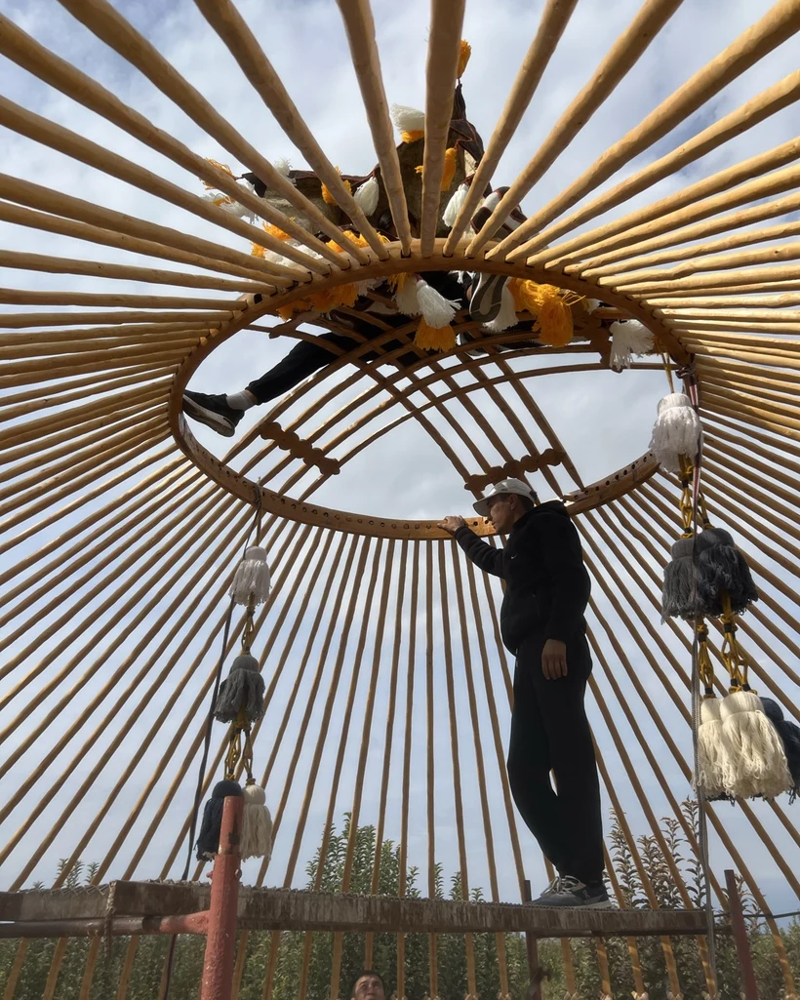

Each piece is a testament to the skill and dedication of the artisans of Kyzyl-Tuu. From the selection of Turpan Tal willow to the finishing of each shyrdak motif, every element is executed with precision, and with no shortcut to scale.
I
The Frame
The frame of a Kyrgyz yurt begins as raw Turpan Tal willow, a specific species chosen over centuries for its combination of lightness, flexibility, and resistance to splitting under tension. This is not an engineered material. It is not kiln-dried Douglas fir measured to a tolerance. It is wood that has been selected, harvested, and shaped by the same family that builds the yurt. The willow is cut in late autumn and winter, when the sap is down, then debarked and left to dry in the open wind before it ever meets steam.
The tündük crown ring is made by steaming a thick log over 15 to 20 days until the fibres relax and the wood can be bent into a perfect circle without cracking. Square holes are then drilled at precise intervals for the uuk roof poles, each hole identical in size, each positioned with the same spacing that has been used in Kyzyl-Tuu for generations. There are no instructions written down. The knowledge lives in the hands.
The uuk roof poles, 85 in a standard 6m yurt, are steam-curved individually. This curvature is the defining structural innovation of the Kyrgyz Boz Üy: it is why the dome stands without a centre pole. The curve carries all compressive load outward to the kerege lattice walls, leaving the interior completely, permanently unobstructed.

The tündük crown and its uuk poles, seen from within
II
The Joinery
The kerege lattice walls, the accordion-folding panels that form the cylinder of the yurt, are bound entirely with strips of rawhide leather called gök. Applied wet, the rawhide shrinks as it dries, creating joints of extraordinary strength that grip tighter the more they are stressed.
There are no nails in a Kyrgyz yurt. No screws. No metal fasteners of any kind in the traditional structure. This is not a design choice made for aesthetics, though the result is more beautiful than any engineered joint. It is a structural decision made over centuries by people who needed their home to survive mountain winters, steppe winds, and thousands of assemblies and disassemblies.
Gök binding flexes under movement rather than cracking under stress. A nailed joint transmits force as a point of failure. A rawhide binding distributes it. The yurt has no weak points because the entire structure works as a single tensioned system: the gök, the uuk curves, the tündük compression ring, the felt tension bands, all in conversation with each other.
"The tündük ring takes fifteen days to form. Steam, then pressure, then rest. You cannot hurry it. The wood tells you when it is ready, not the calendar."
Adylet · Master Builder, Kyzyl-Tuu
III
The Felt
Felting is one of the oldest known textile techniques, older than weaving, older than spinning. Wool fibres, when subjected to heat, moisture, and agitation, open their microscopic scales and lock permanently together, creating a fabric of extraordinary density and insulating capacity without thread, needle, or loom.
The kiyiz felt that covers a Tündük yurt, thirteen rolls in total, eight for the roof and five for the walls, begins as raw sheep wool. It is carded, laid in layers, wetted with warm soapy water, and rolled repeatedly, sometimes for days, until the fibres bond into a solid, supple fabric. A full set of felt for one 6m yurt requires weeks of collective work, traditionally done by the women of multiple families together. In the village the labour has always divided this way: the men shape the frame, the women make and dress the felt.
Kyrgyzstan is described by ethnographers as the heart of felt-making. The country preserves nearly all known felt-making techniques, whereas most other countries retain only one or two. This is not heritage for heritage's sake. Wool felt self-regulates temperature, absorbs and releases moisture, and biodegrades completely. It is one of the most sophisticated building materials ever conceived, and it comes from a sheep.
The techniques
01
Felting
Kiyiz oonu
Wool fibres agitated under heat and moisture until they permanently interlock, no thread, no loom. The fundamental textile technique of the steppe. The finished kiyiz felt protects the yurt from summer heat, winter cold, and rain in equal measure.
02
Shyrdak
Shyrdak tigiü
Two contrasting layers of felt cut simultaneously and swapped, the positive from one becomes the negative of the other. The result is a mirrored geometric carpet of extraordinary intricacy. Each motif carries ancestral meaning. No two shyrdak are identical, because the cutter's hand is never identical twice.
03
Ala Kiyiz
Ala kiyiz basoo
Older than shyrdak. Coloured wool designs are pressed into raw felt during the rolling process, permanently fused as the fibres bond. You cannot draw on ala kiyiz first. The design must exist entirely in the maker's mind before the wool is touched. It is felt-making as a memory art.
04
Oimo Chiy
Chiy toguu
Reed mats woven with coloured wool introduced during the weaving process, the wool becoming part of the reed structure as it dries. The result is an insulation layer that is also a decorative surface. It lines the interior kerege walls between the wood and the outer felt covering.
05
Zabık Bash
Zandal toguu
Wool thread woven in intricate repeating patterns produces the zabık bash, the decorative bands that ring the yurt inside and out. The ichki zabık bash lines the inner wall-to-roof junction; the syrtky runs the lower edge outside. The finishing detail that turns a functional structure into a dressed home.
06
Wood Carving
Bosogo oymakorluk
The bosogo door frame is frequently the most elaborately decorated element of the yurt. Hand-carved with ancestral motifs, chosen by the master to reflect the family receiving the yurt, and painted in traditional colours. In the grandest configuration, the bosogo is the first thing every guest sees.
The builder
Adylet learned to build yurts from his father, who learned from his father. His family workshop in Kyzyl-Tuu village has been producing yurts since before the Soviet cooperative that formalised the craft, and continued through it, and beyond it.
He does not use written instructions. The measurements exist in his body: the angle of the uuk curve felt in the hands that bent it, the correct tension of the gök binding heard in the sound it makes when struck. This knowledge cannot be transferred by document. It transfers by proximity, over years, the way language does.
Every Tündük Boz Üy passes through Adylet's hands. Before each shipment leaves Kyrgyzstan, he records a full video QC walkthrough, every component named, every measurement confirmed. It is the only way to be certain that what arrives on the other side of the world is what was built in Kyzyl-Tuu.
Adylet
Master Builder · Kyzyl-Tuu village · Issyk-Kul Oblast
"When the kerege is fully lashed and stands on its own, before the uuk go up, before the felt goes on, that moment is always the same. Three generations have felt it. The yurt knows what it is."
Adylet · on the assembly moment, Kyzyl-Tuu
The materials
Turpan Tal Willow
Frame · Kerege · Uuk · Tündük · Bosogo
The specific willow species selected for Kyrgyz yurt frames over centuries. Steam-bends without splitting. Lighter than oak, more flexible than birch. Each tree harvested selectively; the workshop manages its own supply.
Why: no engineered wood matches its strength-to-weight ratio at this natural flexibility. It is the only wood that bends the way a yurt needs to bend.
Sheep Wool Felt
Kiyiz · Covering · Insulation
Handmade from raw Kyrgyz sheep wool, carded, layered, wetted, and rolled until the fibres interlock. Thirteen rolls per yurt. Self-regulates temperature, absorbs and releases moisture.
Why: no synthetic insulation self-regulates. Wool breathes. It keeps you warm when wet and cool when dry. It has been doing this for 4,000 years.
Reed (Phragmites)
Chiy · Oimo Chiy · Wall insulation
Wild reed harvested from lake shores and woven into mats that wrap the kerege beneath the felt. The upgrade, oimo chiy, has coloured wool woven in during production, creating a decorative insulation layer.
Why: it creates an air gap between the lattice wall and the outer felt, improving insulation and allowing the felt to breathe. A second skin.
Rawhide Leather
Gök · Joinery · Binding
Applied wet to every lattice joint in the kerege. Shrinks as it dries, gripping tighter under tension. Flexes under movement rather than transmitting force as a point of failure. Zero metal fasteners required.
Why: the gök binding is the reason a yurt can be assembled and disassembled thousands of times without structural degradation. Nails would destroy it in a season.
Natural Plant Dyes
Shyrdak · Ala kiyiz · Zabık · Colour
Traditional motif colours derived from local plants and minerals: walnut, pomegranate, indigo, iron oxide. The palette is the steppe, ochre, crimson, deep green, cream. No synthetic pigments.
Why: natural dyes bond with wool fibres permanently without chemical fixers. They age beautifully rather than fading uniformly. A thirty-year-old shyrdak looks richer than a new one.
0
Nails or screws
0
Metal fasteners
100%
Natural & renewable